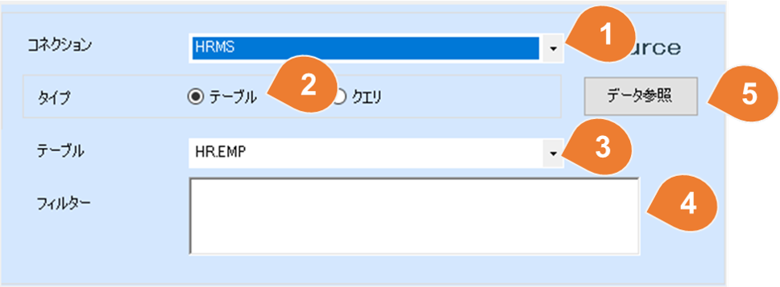
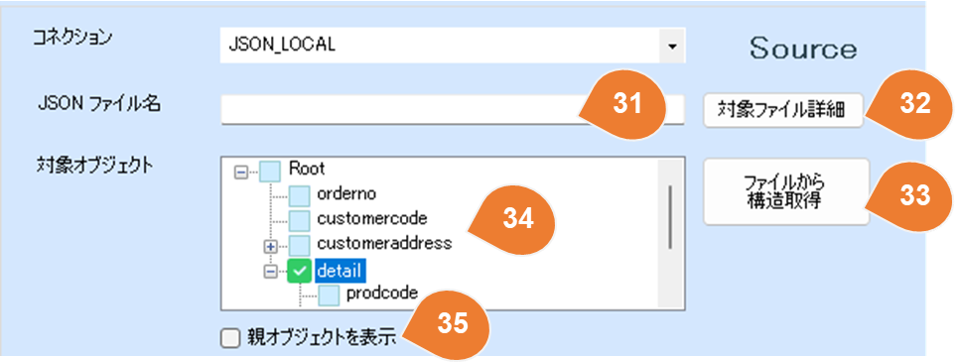
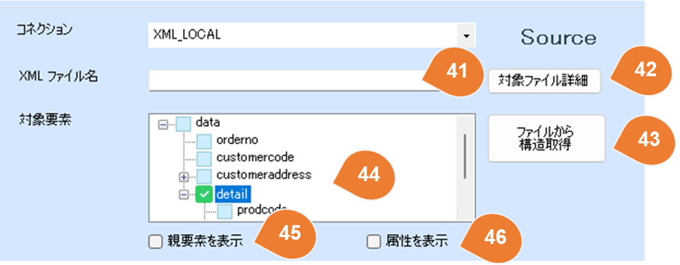

マッピングソースデータ設定
概要
ソースデータは、RDB、CSV、Excel、JSON、XMLから選択できます。 ※ソースデータへの接続設定は、事前にコネクション設定画面で行ってください。
設定

RDB
テーブル

| No | 項目 | 説明 |
|---|---|---|
| 1 | コネクション | コネクション設定画面で設定したコネクションを選択してください。 |
| 2 | タイプ | RDBコネクションを選択した場合、ソースタイプとしてテーブルまたはクエリを選択できます。 |
| 3 | テーブル | タイプに「テーブル」を選択した場合、RDBのテーブルとビューの一覧が表示されます。リストから該当するオブジェクトを選択してください。 |
| 4 | フィルター | データ抽出の条件がある場合、WHERE句を指定してください。 例： WHERE UPDATE_TIME >= SYSDATE - 1| |
| 5 | データ参照 | 既存のデータを参照する画面を開きます。 |
クエリ

| No | 項目 | 説明 |
|---|---|---|
| 6 | クエリ | ソースデータの取得方法としてSQLを使用したい場合、クエリを選択してください。 |
| 7 | クエリ内容 | データ抽出のためのSQLを記述してください。 例： SELECT EMPID , EMPNAME , DEPT_CODE FROM HR.EMP WHERE DEPT_CODE = '0003' |
CSVファイル
| No | 項目 | 説明 |
|---|---|---|
| 8 | CSVファイル名 | コネクションでCSVフォルダーが選択された場合、フォルダー内のCSVファイル一覧が表示されます。リストから該当するファイルを選択してください。 |
| 9 | エンコーディング | CSVファイルのエンコーディングを指定してください。 例：UTF-8、Shift_JIS |
| 10 | ヘッダー行あり | ヘッダー行の有無を選択してください。 |
| ※ | デリミタや囲み文字は自動判別されるため、指定する必要はありません。 |
Excelファイル
| No | 項目 | 説明 |
|---|---|---|
| 11 | Excelファイル名 | コネクションでExcelフォルダーが選択された場合、フォルダー内のExcelファイル一覧が表示されます。リストから該当するファイルを選択してください。 |
| 12 | シート | 取り込み対象のシート番号を選択してください。 ※番号は1から始まります。 |
| 13 | エンコーディング | Excelファイルのエンコーディングを指定してください。 例：UTF-8、Shift_JIS |
| 14 | ヘッダー行あり | ヘッダー行の有無を選択してください。 |
JSONファイル

| No | 項目 | 説明 |
|---|---|---|
| 15 | JSONファイル名 | コネクションでJSONフォルダーが選択されると、フォルダー内のJSONファイル一覧が表示されます。そのリストから、対象のファイルを選択してください。 |
| 16 | 対象オブジェクト | データが配列で構成されている場合、配列内の各要素（明細行）を1レコードとして取り込むことができます。取り込み対象となる配列のオブジェクトを選択してください。 |
| 17 | 親オブジェクトを表示 | デフォルトでは、選択されたオブジェクトの下位レイヤのオブジェクトが表示されますが、親レイヤのオブジェクトも必要な場合は、このオプションをチェックしてください。 |
サンプルで表示されているオブジェクト一覧は、以下のJSON例です。
{
"orderno": 1,
"customercode": "A001",
"customeraddress":
{
"streetaddress":"長島一丁目1-1",
"city":"青森市",
"state": "青森県",
"postalcode":"030-8570"
},
"detail": [
{
"prodcode": 1,
"ordernumber": 3,
"price": 2000,
"amount": "6000"
},
{
"prodcode": 2,
"ordernumber": 2,
"price": 1700,
"amount": 3400
}
]
}
XMLファイル

| No | 項目 | 説明 |
|---|---|---|
| 18 | XMLファイル名 | コネクションでXMLフォルダーが選択されると、フォルダー内のXMLファイル一覧が表示されます。そのリストから、対象のファイルを選択してください。 |
| 19 | 対象要素 | データが配列で構成されている場合、配列内の各要素（明細行）を1レコードとして取り込むことができます。取り込み対象となる配列の要素を選択してください。 |
| 20 | 親要素を表示 | デフォルトでは、選択された要素の下位階層の要素が表示されますが、親階層の要素も必要な場合は、このオプションをチェックしてください。 |
| 21 | 属性を表示 | デフォルトでは、XMLの属性が表示されません。属性データも必要な場合は、このオプションをチェックしてください。 |
サンプルで表示されている要素一覧は、以下のXML例です。
<data>
<orderno>1</orderno>
<customercode>A001</customercode>
<customeraddress>
<streetaddress>長島一丁目1-1</streetaddress>
<city>青森市</city>
<state>青森県</state>
<postalcode>030-8570</postalcode>
</customeraddress>
<detail>
<prodcode>1</prodcode>
<ordernumber>3</ordernumber>
<price>2000</price>
<amount>6000</amount>
</detail>
<detail>
<prodcode>2</prodcode>
<ordernumber>2</ordernumber>
<price>1700</price>
<amount>3400</amount>
</detail>
</data>
Web Service/ Web API
| No | 項目 | 説明 |
|---|---|---|
| 22 | エンドポイント | 相対URLを入力してください。 時間に関する動的パラメータの設定が可能です。 現在日付を使用する場合の設定例：/api/v1/orders/{yyyyMMdd} 昨日の日付を使用する場合の複雑な設定例：/api/v1/orders/{DateTime.Now.AddDays(-1).ToString("yyyyMMdd")} |
| 23 | 更新 | エンドポイントから最新情報を取得します。 |